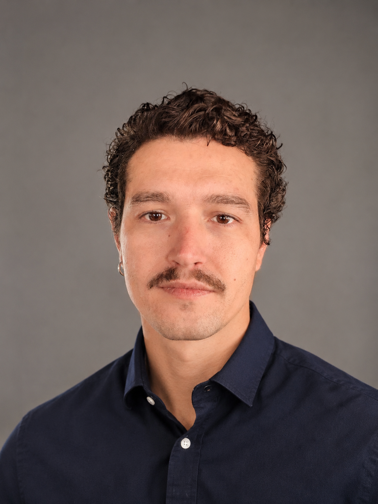

LUG 2019 — OGGI
ASM Pavia S.p.A.
Comunicazione aziendale, contenuti digitali, relazioni con media e pubblico, progetti informativi.

Un percorso che combina formazione economico-manageriale, comunicazione e attività progettuali.
Idee, persone e strumenti: il mio lavoro è metterli in relazione per realizzare attività concrete.
Le tappe principali. I dettagli completi sono nel CV scaricabile.
Comunicazione aziendale, contenuti digitali, relazioni con media e pubblico, progetti informativi.
Ufficio stampa, piani editoriali, aggiornamento sito e supporto alle iniziative.
Attività nell'area comunicazione aziendale.
Copywriting, coordinamento operativo, media relations, customer care, eventi e fornitori.
Economia, management, comunicazione e aggiornamento professionale.
Clicca sulle copertine per scoprire il contesto e il lavoro svolto.
Copertine grafiche illustrative. Le immagini e i materiali originali dei progetti saranno inseriti in una fase successiva, previa verifica della pubblicabilità.